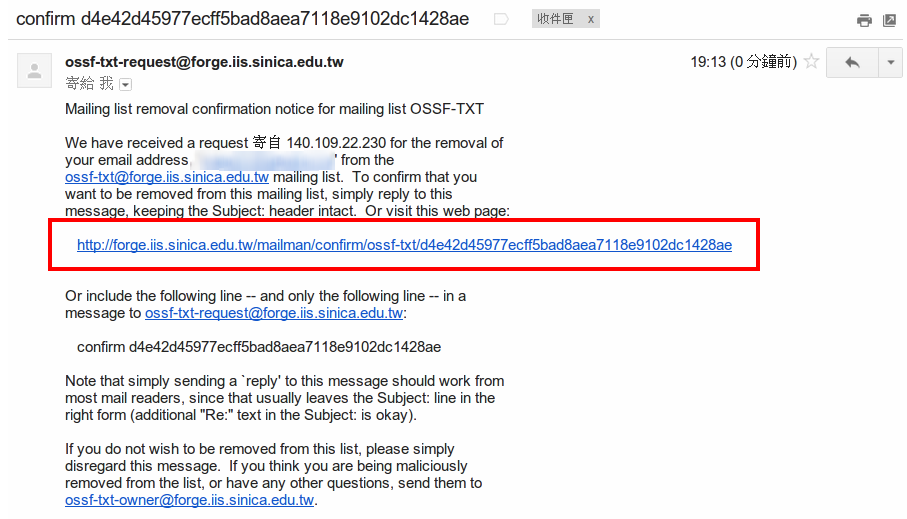

退閱步驟

1. 請連至本站或 新聞 於畫面左側的 「訂閱電子報」功能輸入您的mail及您欲退閱的電子報類型(HTML 或TXT) ，選擇「取消訂閱」按下「GO!」

2. 即會跳出您的訂閱選項畫面，請確認上方您輸入的mail為正確的資料後，按下下方的「退訂」按鈕，並至您的信箱收取退閱確認信

3. 請於您當時的訂閱信箱中，收取寄件者為
這個 E-mail 地址已經被防止灌水惡意程式保護，您需要啟用 Java Script 才能觀看
或
這個 E-mail 地址已經被防止灌水惡意程式保護，您需要啟用 Java Script 才能觀看
(依您退閱的電子報類別HTML 或 TXT 而定)，並依照信上的步驟直接回信或點選信上的退訂url至web 上確認退訂即可。
3.1 收取信箱標題為 「confirm xxxxxxx」的信箱 (xxx為系統亂數編碼)

3.2 點選信上連結，至下方網頁位置，再次確認退訂E-Mail 後，即按下下方 [退訂] 即可。

4. 完成後，即畫面會出現您已完成退訂程序，而後續電子報則不會再寄至您的退訂信箱了。